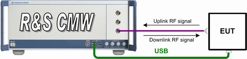
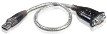

This test setup is suitable for RF test mode with USB interface, testing BR, EDR and LE bursts.
In addition to the bidirectional RF COM connector as used in the "Tests without USB Interface", the R&S CMW uses a secondary communication channel via USB for control commands.
See also: "RF Connectors"

The installation of a USB driver is necessary on the R&S CMW. The installation differs for direct USB connections and connections with a USB to RS232 adapter.
The driver of several USB device types is provided within "Bluetooth Signaling" application.
For the first time, the setup file must be executed manually on the R&S CMW as follows:
Open the Windows Explorer (Windows sign + E).
Execute the hciusb.msi file stored in the default "Program Files" directory ...\Rohde-Schwarz\CMW\3.5\RS.bluetooth_sig\drivers.
For EUTs without a USB interface, the serial RS232 port (COM port) can be used instead. In this case, the installation of an additional driver is necessary on the R&S CMW.
Install the driver for the used USB to RS232 adapter according to the installation instructions of the vendor.
The USB to RS232 adapter UC-232A from ATEN International Co., Ltd. is recommended (for more information, see http://aten.com). The installation file is delivered within the converter on the installation disk. It can be also downloaded from the vendor’s website together with the installation instructions. Copy the installation files via USB or LAN to the R&S CMW.

Verify that the driver is properly installed on the R&S CMW as follows:
Open the device manager (Windows sign + D to show the desktop, Start > Control Panel > Device Manager).
Find your USB to RS232 adapter under Ports (COM & LPT), for example, ATEN USB to Serial Bridge (COM4). The COM port number depends on the connected USB port.
Note that the "Virtual COM Port" used by the "Bluetooth Signaling" application has different numbering than the COM port assigned during the installation of the USB-to-serial driver.